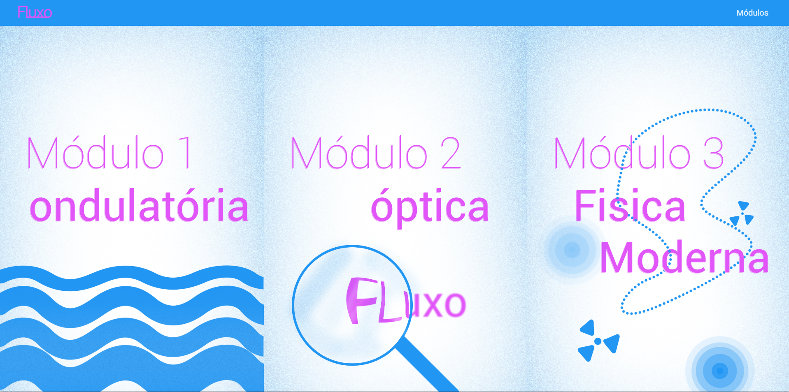
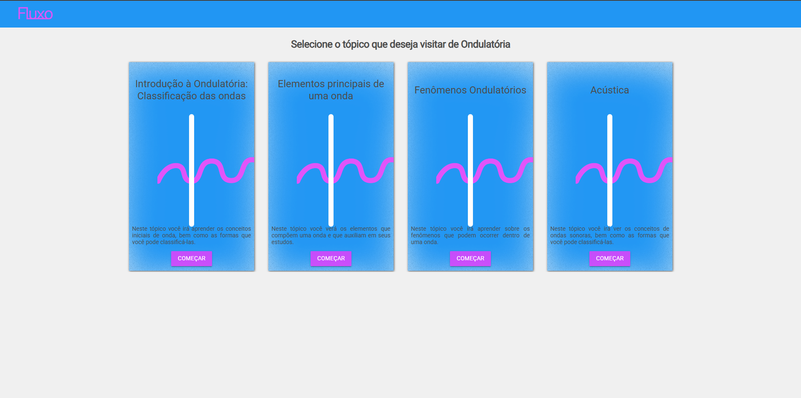
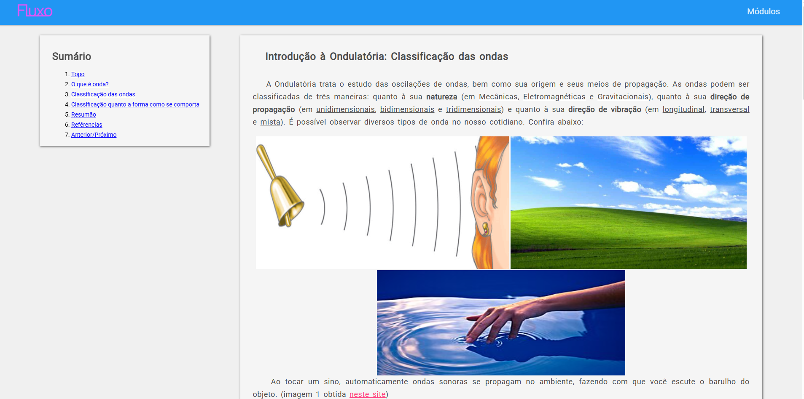
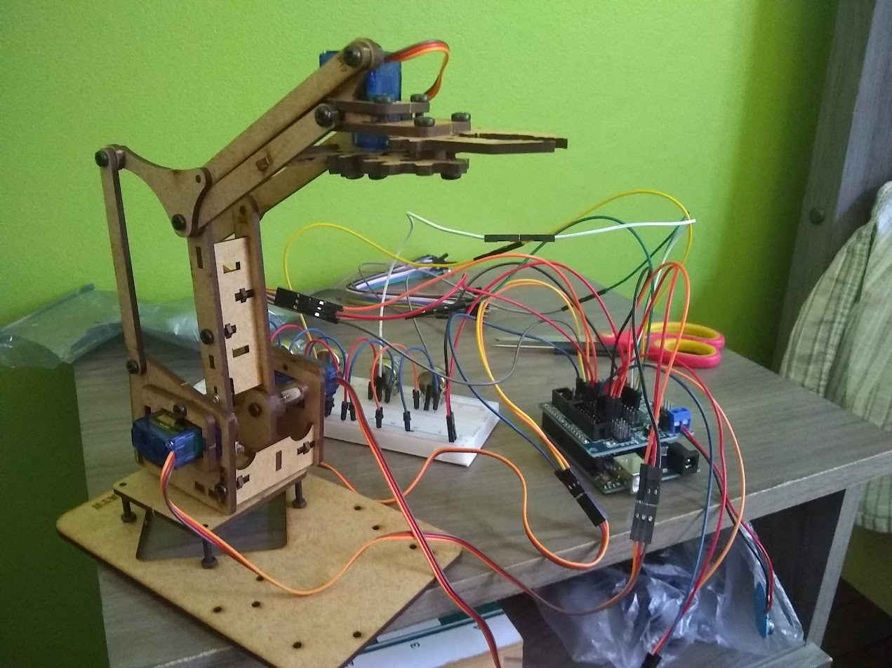
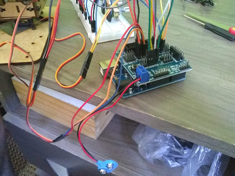
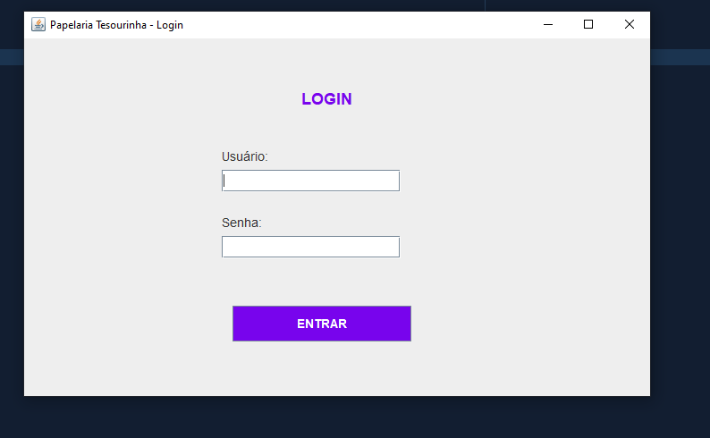
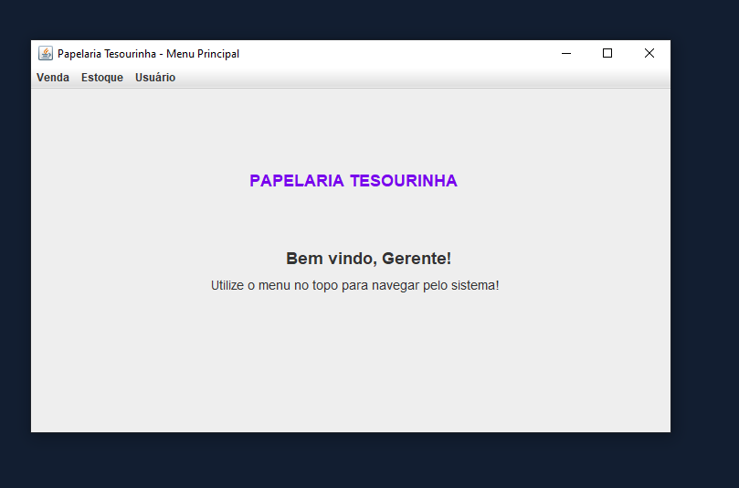
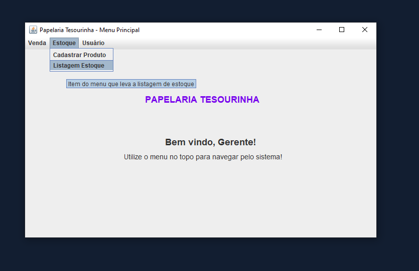
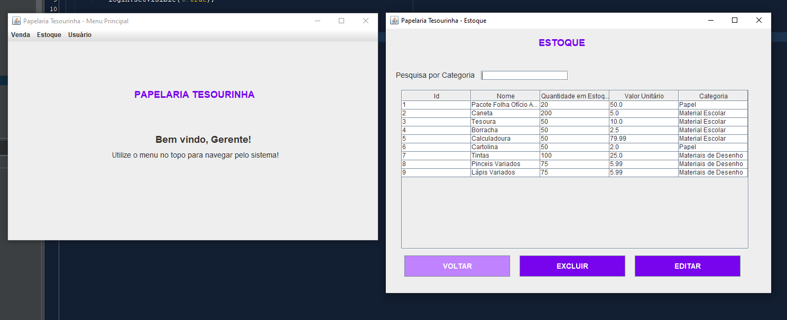
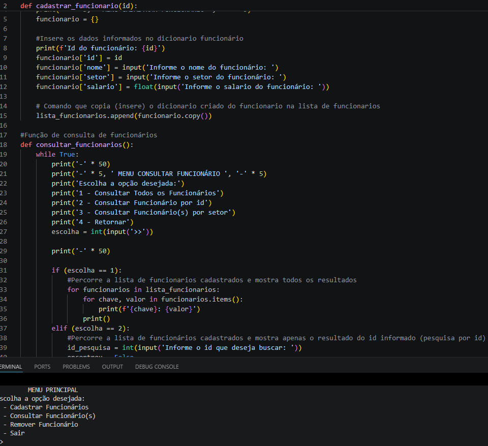

Portfólio
GitHub: Visitar Página do GitHub
Nesta seção "Portfólio" encontramos os projetos e sistemas produzidos até o momentos. Os projetos citados e as habilidades/conhecimentos podem ser visualizados nos projetos apresentados no GitHub, além das imagens e comentarios feitos nessa página.
Desenvolvimento WEB
Ao longo dos cursos eu desenvolvi alguns projetos e trabalhos envolvendo WEB, aqui foram selecionados os mais completos e interessantes, mas no GitHub constam os mais variados projetos.
Site Fluxo
Durante o tecnico em informática (2019) foi desenvolvido em grupo um site que reunia os conteúdos de física estudados no ensino médio. Disso surgiu o Fluxo um site que contem explicações e exemplos dos conteúdos de física abordados nas aulas do ensino médio.
Imagem 01 - Página Inicial Site Fluxo
Os conteúdos foram separados por módulos e depois em temas, dessa forma o usuário poderia escolher especificamente o conteúdo desejado

Imagem 02 - Página de escolha de módulo do Site Fluxo
O site possuía um design dinâmico e chamativo para tornar interessante os estudos sobre os temas.

Imagem 03 - Página da escolha de Conteúdo do Site Fluxo
Por fim o conteúdo era apresentado numa página inteira possuindo mapa mental, textos, imagens, formulas e videos extras para auxiliar no aprendizado

Imagem 04 - Página de conteúdo do Site Fluxo
Site Sugar We're Going Down
Outro projeto é o site de receitas culinárias "Sugar we're going down" que foi desenvolvido também no curso técnico em informática (2021) utlizando PHP.
O mesmo pode ser encontrado no GitHub.
Nele, o usuário administrador inseria, editava e apagava receitas de sobremesas com a interface intuitiva desenvolvida. O site fazia a ponte com o banco de dados SQL
que armazenava as receitas salvas. As receitas eram de visualização geral, mas somente com o acesso autorizado poderia ser editado ou inserido novas informações.
Contudo, havia uma área de envio de mensagens para sugestões de receitas, e pedidos de alterações/correções.
Arduino
Braço Robótico
Nessa seção de Arduino há meu projeto mais interessante, apesar de ser simples foi bem interessante e um aprendizado diferente. Estudando por conta própria através de materiais online repliquei um sistema de Braço Robótico. Durante o período de estudos foram feitos alguns outros projetos, não se limitando somente a esse apresentado.

Imagem 01 - Braço Robótico construído com Arduino

Imagem 02 - Placa do Arduino com as conexões do Braço Robótico
Linguagem Java
Durante os cursos foram realizados diversos desenvolvimentos e estudos com base na linguagem java de desenvolvimento. Uma linguagem que foi trabalhada durante bastante tempo e portanto a que eu mais tive contato.
Papelaria Tesourinha
Um sistema com banco de dados SQL, que foi projetado e desenvolvido para uma papelaria. A ideia principal era trabalhar, com produtos e um estoque, um setor de vendas e um setor de usuários, portanto era necessários desenvolver as operações base para os 3 setores (Inserir, Alterar, Ler e Excluir). Isso tudo com restrição de acesso, logo o sistema possui sistema de login que reconhece o nivel do usuário logado e habilita somente suas funções permitidas. Foram usados Java e SQL no desenvolvimento do projeto.
A tela inicial do programa, uma simples tela de login.

Imagem 01 - Tela Inicial Sistema Papelaria
Na demonstração foi utilizado o login do gerente que possui todos os acessos. Um sistema simples cuja a navegação é por um menu Dropdown localizado no topo da tela.

Imagem 02 - Imagem da Tela Inicial Logado no Usuário Gerente
Nessa imagem vemos que o menu estoque possui duas opções, de cadastrar produtos e visualizar estoque, os outros setores possuem as mesmas opções de navegação a única diferença é a restrição dependendo do nivel do usuário.

Imagem 03 - Imagem do funcionamento da interface
A tela de listagem do estoque sendo usada, além disso há uma pesquisa por categoria para facilitar a busca, nos casos de produto e usuário o campo de pesquisa muda para o valor que for mais conveniente na busca.

Imagem 04 - Imagem da Listagem do Estoque
Python
Durante a graduação houveram algumas cadeiras de Python e portanto tenho alguns projetos desenvolvidos e conteúdos abordados Apesar de não serem em grande quantidade ou complexidade é importante registrar o conhecimento na linguagem.

Imagem 01 - Imagem de um projeto produzido em Python
Além de tudo isso, durante os estudos sobre as linguagens e áreas de desenvolvimento foi estudado sobre Banco de Dados com foco SQL. Com Isso em diversos projetos das linguagens de desenvolvimento foi aplicado SQL.